복잡한 설명 없이, 빠르고 정확하게 귀 건강을 확인하세요.
WithHear™가 청력검사의 새로운 일상으로 다가갑니다.
청력검사, 고막 촬영까지 AI 기반의 청력 선별검사를 한 대의 키오스크로 완성
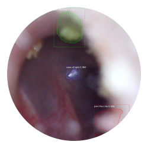
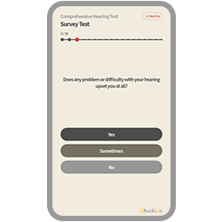
난청 관리가 필요한 현장에 누구나 쉽게 접근할 수 있도록,
의료 낙후지역 뿐만 아니라 유동인구 밀집 지역에서도 활용 가능 합니다.
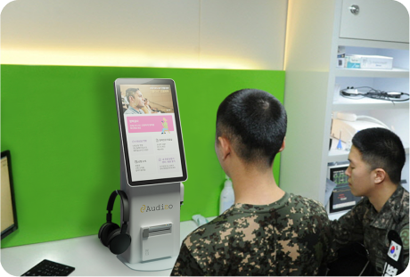
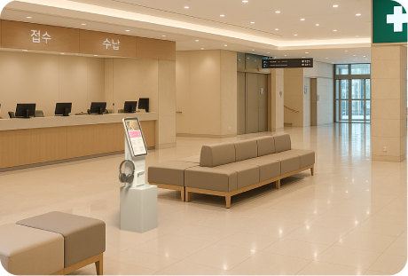
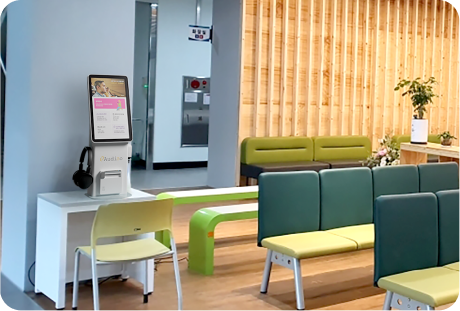
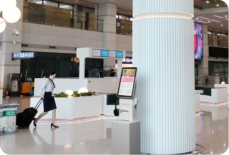
복잡한 절차나 긴 시간은 이제 안녕! WithHear™ 안내 화면에 따라
간편한 터치 조작으로 빠르고 정밀한 선별진단이 가능합니다.
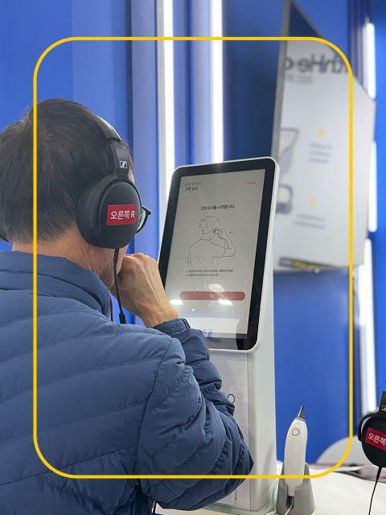
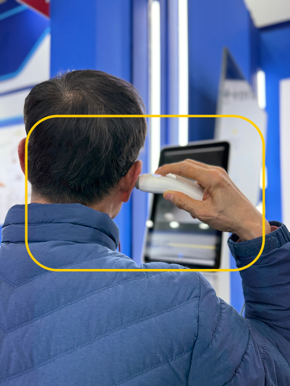
국가 지정 청력계 공인 교정 기관 오디에스오만의 철저한 성능 교정과
참조 표준 청각 빅데이터 기반 측정 알고리즘이 결합된 높은 검사 신뢰도 보증
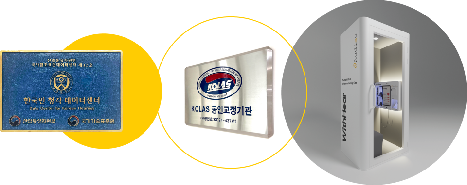
주식회사 오디에스오는 ISO/IEC 17025 국제표준 규격에 의거, 청력검사 장비의 필수 성능과 안전사양을 측정 및 교정하여 동일한 검사결과를 보증해주는 음향 및 진동 분야 공인 교정기관입니다.
(KOLAS 마크 무단 사용은 국가표준기본법 및 형법 등에 저촉되는 범죄 행위입니다.)
(WithHear™ 위드히어™는 오디에스오의 고유 상표입니다.)
복잡한 장비 없이 빠른 시간 정밀한 자가 진단이 완료되는 과정을 체험한 많은 국내외 청각 전문가들이 놀라움을 표했습니다.
국적과 연령에 상관없이 누구나 직관적으로 이해하고 조작할 수 있는 시스템 설계로 "당장 해외 현장에 도입해도 손색없다"는 평가를 받았습니다.
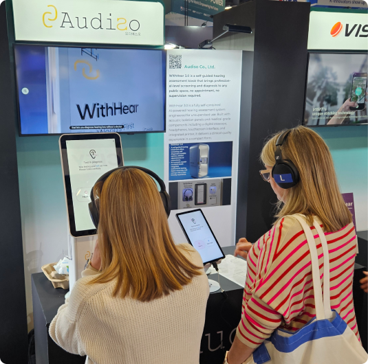
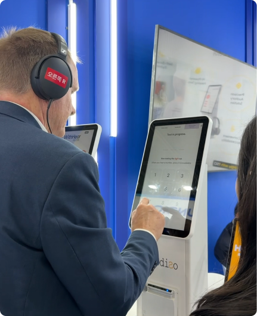
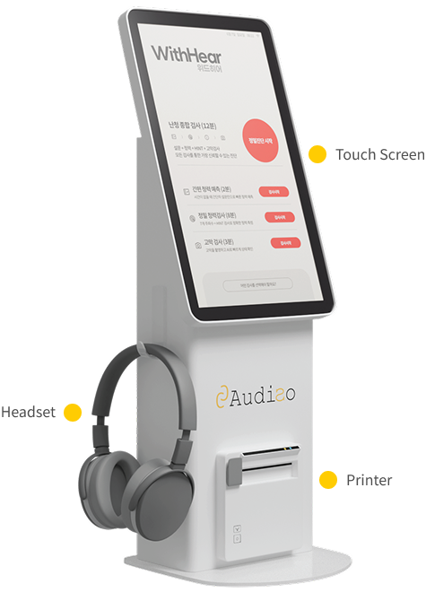
| MODEL | WithHear |
| DISPLAY | 15.6 / 21.5" FHD LCD Touch Screen |
| MEMORY | DDR4 4GB / 8GB |
| PROCESSOR | Rockchip RK3568 |
| STORAGE | eMMC 32GB |
| OS | Android 11 / 14 |
| INTERNAL | Thermal Printer (EPSON) |
| ACCESSORIES | Headset (SennHeiser) |
| DIMENSION | 243×667×219 / 288×1430×328 mm |